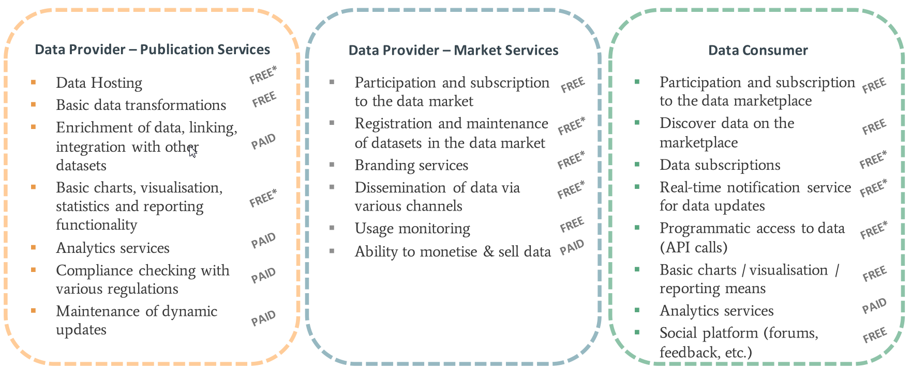

Corporate information, including basic company firmographics (e.g., name(s), incorporation data, registered addresses, ownership and related entities), financials (e.g., balance sheets, ratings) and contextual data (e.g., addresses, economic activity classification, key officers, public tenders data, press mentions and events) are the foundation that many data value chains are built on. Furthermore, this type of information contributes to the transparency and accountability of enterprises, is instrumental when input to the process of marketing and sales, and plays a key role in many business interactions. Collecting and aggregating data about a business entity from several public sources (be it private/public, official or non-official ones), and especially across country borders and languages is a tedious, time consuming, error prone, and expensive operation which renders many potential business models non-feasible.
The euBusinessGraph project integrates European company and economic data from various data providers, including OpenCorporates (the largest open database of company info crawled from official registers), Norway's Bronnoysund Register Center (official register data), SpazioDati (rich IT data from official registers, additional databases, web crawl of company sites, tender info, etc.), EventRegistry events, GLEI, Panama Leaks, etc.
euBusinessGraph is intended to overcome these barriers and provision several important business cases, such as economic journalism (Deutsche Welle), publication of rich company data (BRC), tender information service (CERVED), business intelligence (EVRY), etc. It will also provide a marketplace of company data, with some free search and faceting, leading to information about richer Data Offerings by specific providers and their pricing.
We will present the work done on exploring relevant ontologies and vocabularies for describing companies, systems of identifiers, development of a unified data model, plans for data flows, data aggregation, matching and cross-linking, and the opportunities that lie ahead for the business cases and the data marketplace.
This session will demonstrate services like company popularity ranking, monitoring mentions of related entities in news and finding suspicious relation patterns in FactForge – a knowledge graph with more than 2 billion edges of POL (persons, organizations, locations) data interlinked with 1 million news articles.
An accompanying poster and presentation are available.
Introduction
euBusinessGraph is a 30-month research project funded by the EU H2020 programme on Big Data integration and experimentation that started in January 2017. Its purpose is to integrate a large number of economics-related datasets such as companies, public procurement tenders, company events, etc.; to provision 6 business cases using that data; and to establish a data marketplace for such data. The project partners comprise:
The project concept including data value chain and customer segmentation, is shown below.
Project Concept
Business Cases and Lean Business Modeling
The business cases addressed by the project include the following:
OpenCorporates will enlarge its offering with a Corporate Events Data Service. It will increase the number of EU Government Gazettes ingested (see OpenGazettes) and add non-register sources of company events.
Cerved will implement a Tender Discovery Service that will integrate data from various sources of public procurement info and implement a recommendation component that can suggest relevant tenders to companies.
SpazioDati will increase the reach of its Atoka company information service (Atoka+) by aggregating data about more countries.
Deutsche Welle will implement a new Economic Journalism tool to save cost in the editorial department and increase public reach through improved story telling.
EVRY will leverage the business graph to be developed by the project in a set of Customer Relationship Management (CRM) systems, increasing data reach and quality.
BRC will publish the full spectrum of official register data in RDF and describe the data in a semantic way, increasing the value of Norwegian LOD.
Business case development proceeds in an agile fashion, using Lean Business Modeling and Minimum Viable Product approaches to ensure the developed products meet market demand. We use tools such as Product Vision Statement, Lean Business Model Canvas, Value Proposition Canvas, GO product roadmap, Test card, and Learning card as adopted by SINTEF's innovation department. Below is an example of a lean Business Model Canvas for Atoka+
Example Business Model Canvas
Various monetization models are considered by the partners, including free, freemium and paid (for premium data). Describing such dataset offerings is an important function of the project.

Example Monetization Models
Company Datasets and Ontologies
The project studied numerous ontologies and datasets that represent company and related economic data, and which were taken into account when creating the project's data model. Amongst them are:
Global Legal Entity Identifier (GLEI) ;
Business Registers Interconnection System (BRIS) ;
Financial Industry Business Ontology (FIBO) ;
OpenCorporates schema ;
Bulgarian Trade Register schema ;
W3C Organization ontology ;
W3C Registered Organization ontology ;
W3C Location ontology ;
Dun & Bradstreet company data;
Panama Papers offshore company dataset and its RDF representation Linked Leaks ;
Wikidata properties for describing companies, especially company identifiers in various registers;
A number of related and subsidiary ontologies and code lists such as Schema.org, Dublin Core, IANA language tags, NUTS and LAU (EU administrative regions), NACE (EU economic activities), etc.
presents some of these data artefacts, and relates each of them to the "5V" of big data (Variety, Volume, Velocity, Veracity, leading up to Value). Many of these data sources are not in semantic format, therefore mapping and conversions are required if they are to be integrated semantically. Below is an example of such mapping: the GLEI XML schema to the FIBO ontology and a custom GLEI Ontology (GLEIO) .
Mapping of GLEI to FIBO and GLEIO
Semantic Data Model
The euBusinessGraph semantic data model is a synthesis of the various data artefacts that we studied, fulfilling the data needs of the project. It includes detailed treatment of classes, properties, values, scope notes, data provider rules, URL conventions, etc. It reuses ontologies such as W3C Org, RegOrg, Locn, ADMS; DC, DCT, schema.org, SKOS, SIOC. It reuses datasets such as NACE (economic classification), NUTS+LAU (EU regions), GLEI RAL (registration authority list).
This initial draft covers companies, company types, status, addresses, NUTS+LAU regions, NACE classification of economic activity and registrations (identifiers). We will shortly add detailed information about registers: dataset offerings, what level of detail they cover, per-company URL templates, MIME types. Future versions will add information about officers (directors, executives), provenance (who contributed which data). We used rdfpuml to generate semantic model diagrams (see ) and Object-Role Modeling through the Norma tool (see ) to generate an RDF representation.
euBusiness Graph Semantic Model Diagram
Object-Role Diagram of Part of the Semantic Model
Technologies Used
In addition to partner datasets, the project may use some of the following technologies and tools:
Ontotext Cognitive Cloud (successor of the Self-service semantic system) provides on-demand access to text analytics, semantic graph databases and Linked Data technology in the cloud (Amazon Web Services). A user can start building Smart Data prototypes without the need for licensing, provisioning, installation and maintenance. In the project, the Cognitive Cloud will be used as platform for developing, running and hosting the euBusinessGraph Marketplace and Services.
Ontotext Cognitive Cloud Architecture
DataGraft "One stop shop for hosted data management" is a tool to interactively build, modify and share data transformations; reuse transformations to repeatably clean and transform spreadsheet data; and finally host and share datasets in a semantic way.
RDF by Example is an Ontotext tool for semantic modeling and R2RML Generation
Dandelion API is a semantic text analysis tool used by SpazioDati.
Wikifier is a semantic annotation tool for 100s of languages used by JSI for EventRegistry.
ABSTAT is a tool for Linked Data Summarization with ABstraction and STATistics by UNIMIB.
Other semantic conversion tools that may potentially be used include:
TARQL is a command-line tool for converting CSV files to RDF using SPARQL 1.1 syntax.
XSPARQL is W3C submission for a query language that melds XQuery and SPARQL , and the respective tool that implements it. It transforms XML, JSON and relational data (RDB2RDF) to RDF (lifting), SPARQL querying and conversions to other formats (lowering), the full power of XQuery for control flow and sequence processing, and scripting for Web data integration in general.
Demonstration with FactForge
As part of our presentation, we demonstrate services such as company popularity ranking, monitoring mentions of related entities in news, and finding suspicious relation patterns. We use data from FactForge, a knowledge graph of about 2 billion triples. It represents a hub of open data and news about persons, organizations and locations (POL data):
Popular LOD datasets: DBPedia, Geonames, WorldFacts and Wordnet.
POL data: Panama Papers, GLEI, Trump World. People and organizations from these datasets are mapped to DBPedia. The schemata of these datasets and DBPedia are partially mapped to FIBO classes and relationships in order to allow for unified querying and analytics across the different datasets.
A live stream of news metadata, linking the articles to entities and concepts: about 2000 news per day tagged with the News On the Web (NOW) semantic news demonstrator.
FactForge allows one to play with the data through GraphDB’s Visual Graph Explorer – a customizable interactive exploration tool (see below). See for a detailed report on visualization capabilities.
GraphDB Workbench Visual Graph
Sample queries in FactForge demonstrate media monitoring, tracing company control, industry trends and statistics. One of them is a SPARQL query that detects the following pattern: a company that controls another company in the same country, through a company registered in an offshore zone.
Finally, Rank is a demonstration service for news popularity ranking of companies. It supports ranking with consolidation of mentions of subsidiaries and is based on FactForge.
Global Ranking of Automotive Companies
Acknowledgements
euBusinessGraph has received funding from the EU H2020 research and innovation programme "Big Data PPP: cross-sectorial and cross-lingual data integration and experimentation" under grant agreement No 732003.
Dumitru Roman, Nikolay Nikolov, Antoine Pultier, Dina Sukhobok, Brian Elvesæter, Arne Berre, Xianglin Ye, Marin Dimitrov, Alex Simov, Momchill Zarev, Rick Moynihan, Bill Roberts, Ivan Berlocher, Seon-Ho Kim, Tony Lee, Amanda Smith, Tom Heath. DataGraft: One-Stop-Shop for Open Data Management. Semantic Web Journal, 2016